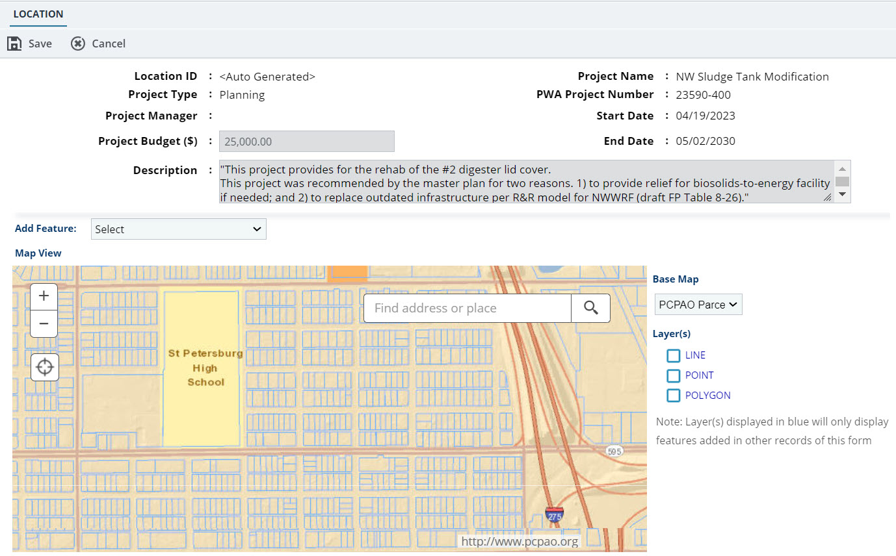

Managing Project Location Details on a Map
- The role of the logged-in user should be one of the following:
- Administrative Support
- Construction Inspector
- Construction Manager
- Engineer of Record
- Engineering Director
- Field Supervisor
- Fund Manager
- Manager
- Program Manager
- Project Manager
- Support Services
-
In the module menu, click Planning.
The PLANNING DASHBOARD page is displayed.
-
In the navigation pane, click Planned Projects.
The PLANNED PROJECTS list page is displayed.
- In the list page, double-click the appropriate project.
-
In the navigation pane, expand the project folder, and then clickLocation.
TheLOCATION list page is displayed.
-
ClickNew.
Figure 1. Location Page 
TheLOCATION page displays the following non-editable fields:Field Name Description Location ID On saving the record, a unique identification code is automatically generated. PWA Project Number When the project workflow status moves to In-Progress, a unique identification number is automatically generated for the project. Project Name The name of the associated project. Project Type The type of the associated project. Project Manager The name of the project manager. Project Budget ($) The budget of the associated project. Start Date The date the project begins. End Date The date the project ends. Description The description of the project. -
To associate a contract with the location, from theContractdrop-down list, click and select the appropriate contract.
Alternatively, type the name of the contract, and then select the contract.
Available contracts are all the contracts the user is invited to in the project.
- In theTitle box, enter the title for the project location.
- In theDescriptionbox, enter a detailed description of the project location.
-
To find the appropriate location and draw the location geometries on the map, perform the following steps:
-
To find the appropriate location on the map, perform the following steps:
-
Drag the map in the required direction.
-
In the Find address or place box, enter the name of the location, click , and then click the appropriate location.
The map of the area is displayed.
-
Use or to zoom in or out on the map.
-
Select the appropriate base map from the Base Map drop-down list.
Available options are base maps defined in the BASE MAPS section in the GIS Settings page of the Administration module. For more information, refer to Adding Base Maps.
-
To view layers such as stations or transit centers, select the required layers in the Layer(s) section.
The Layer(s) displayed in blue will only display features added in other records of this form.
Available options are base maps defined in the LAYERS section in the GIS Settings page of the Administration module. For more information, refer to Adding Layers.
-
-
In the Add Feature drop-down list, select the required feature to mark on the map.
The drawing toolset will display options based on the configured geometry corresponding to the selected feature.
-
To draw the location geometries, perform the following steps:
- To mark a point on the map, click , and then click on the map at the required location.
- To draw a polyline, click , and then click on the map. To complete the boundary, follow the instructions as displayed on the map.
- To draw a freehand polyline, click , and then click on the map. To complete the boundary, follow the instructions as displayed on the map.
- To draw a triangle, rectangle, or a circle, click , , or , click on the map, and drag to size the map marker.
- To mark a boundary, click or , and then click on the map.
To complete the boundary, follow the instructions as displayed on the map.
- To draw an arrow mark, click , and then click on the map and drag to size the map marker.
-
Optionally, to update the location geometries drawn on the map, perform the appropriate actions, as described in the following table.
Action Steps Edit - Right-click in a boundary or on a line, and then click Edit.
Points that are editable are displayed.
- Click a point and drag to edit the marker.
Move - Right-click in a boundary or on a line, and then click Move.
- Click and drag the map marker to the required location on the map.
Rotate - Right-click in a boundary or on a line, and then click Rotate.
- Click , and drag to rotate the marker.
Scale - Right-click in a boundary or on a line, and then click Scale.
- Click a point and drag to adjust the marker boundary.
Delete - Right-click in a boundary or on a line to be deleted.
- Click Delete.
A confirmation message is displayed.
- Click OK.
- Right-click in a boundary or on a line, and then click Edit.
-
To find the appropriate location on the map, perform the following steps:
-
Click Save & Exit to save the record and return to the list page. Optionally, click Save & Continue to save the record and continue on the same page.
The map markers are saved on the map.
The project location data created in the Mind application is automatically saved in the external system ESRI (ArcGIS). In the list page, the ESRI Save Status column displays the current status of saving data to ESRI.
The following are the different statuses:
Status Description Completed The location geometry is successfully saved from the application to the ESRI geodatabase. Note: Once the geometry drawn on the map is successfully saved to theESRIgeodatabase, the updated or edited geometry will override the current geometry present in ESRI. The changes will not be merged.In Progress Saving location data from the application to the ESRI geodatabase is in progress. If the first attempt of saving location data fails, then the system automatically attempts to save the location data, based on the number of tries defined in the ESRI SAVE SETTINGS section in the GIS Settings page of the Administration module. For information ESRI save settings, refer toConfiguring the ESRI Save Settings. Pending Saving of location data to the ESRI geodatabase is pending. Failed Saving location data from the application to the ESRI geodatabase has failed despite retrying after the configured number of retries defined in the ESRI SAVE SETTINGS section in the GIS Settings page of the Administration module.For information ESRI save settings, refer toConfiguring the ESRI Save Settings.The following are the different statuses: